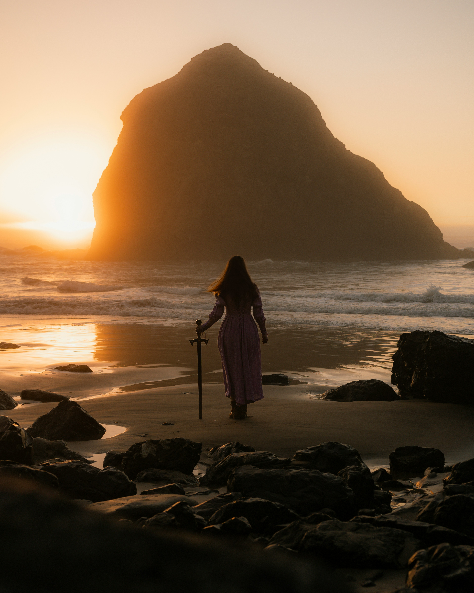
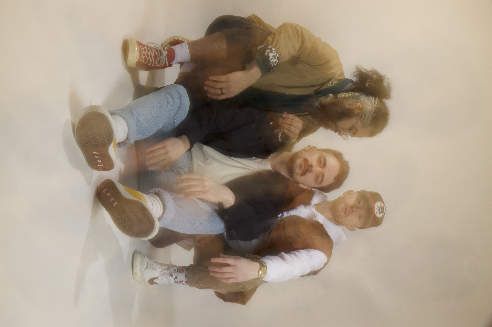
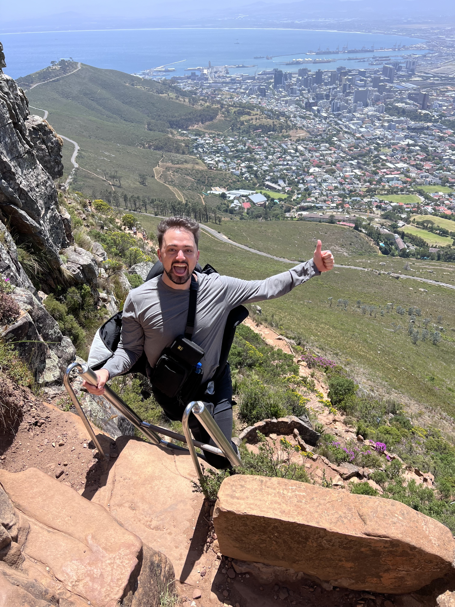

From the moment I first turned the pages of a fantasy novel or ventured into pixelated realms in video games, I was captivated. Fantasy has always felt like a calling, an invitation to explore boundless worlds born of imagination and daring. Now, I stand at the precipice of my own creation—a world that I am weaving from the threads of my passion.
This world is a fusion of contrasts, an aetherpunk spectacle where the deafening roar of a burgeoning industrial boom collides with the haunting echoes of an era of magic long past. At its core lies a substance unlike any other, a relic of forgotten sorcery that whispers promises of power and peril in equal measure. Societies within this world grapple with its mysteries, pushing the boundaries of innovation while treading the delicate line between progress and destruction.

Music has always been the heartbeat of my life, a force that has driven me to create, connect, and express myself in ways words alone never could. It all began in high school, when I grabbed a few of my best friends and together we formed our first band. We named it after our choir teacher—a nod to the person who first saw the spark of music in me. That band was the beginning of it all, our sound raw and unpolished, but full of passion. It was a time of discovery, the first step into a world that would soon consume me.
When I went to college, music evolved from a hobby into something more profound. I formed a new band, taking its name from the music hall on campus where we spent countless late nights crafting our sound. It was here that my musicianship truly grew. We played local bars, soaking in the gritty, electric atmosphere of live performances, and even found ourselves opening for acts like X Ambassadors and Hellogoodbye. Those moments on stage, where time seemed to stand still, solidified my dream of making music that resonates with others.
Now, my journey has led me to my latest band, Of Night. With this project, we’re creating something deeply nostalgic yet undeniably fresh, drawing inspiration from the indie and synth-pop era of the ’80s. Our music is a soundtrack for small towns, late summer nights, and the raw, unfiltered emotions of young love—a true coming-of-age tale in sonic form. Through Of Night, I’m not just playing music; I’m weaving stories and memories, hoping to evoke that perfect bittersweet feeling of remembering something you never want to let go.

Up until recently, I had never owned a passport. Travel just wasn’t something I’d explored—at least not until now. Over the past few years, I’ve had the chance to visit places like Ireland, South Africa, the Dominican Republic, and Scotland. Each destination has been an incredible experience, from the lush landscapes of Ireland to the vibrant cultures of South Africa, the laid-back warmth of the Dominican Republic, and the rich history of Scotland.
What I’ve really come to love about traveling is immersing myself in other cultures, especially through their food. There’s something unforgettable about learning a place’s story through its flavors—whether it’s traditional dishes or local favorites.
Now that I’ve started, I’m excited to see where else I can go. My list of countries to visit is only just beginning, and I’m looking forward to adding even more experiences to it. That photo is me climbing Lions Head mountain in South Africa!
